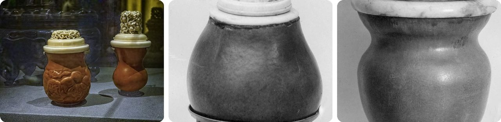
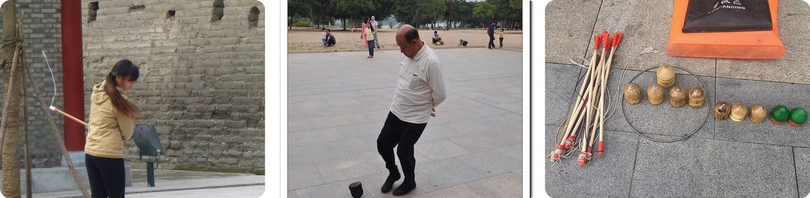
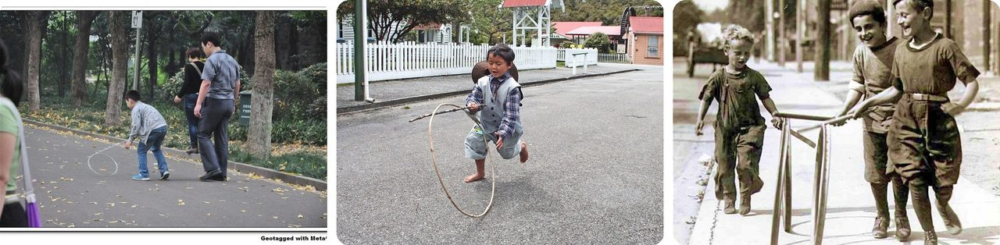

🌍 Top 10 Combats de grillons et jeux d'enfants chinois d'autrefois
22 novembre 2026
1. 🇨🇳 En Chine, on chatouille les grillons de combat avec une paille avant le match
 En Chine, le combat de grillons (斗蟋蟀) oppose deux grillons mâles dans un petit récipient. D'abord, on les pèse, car les combats se font par poids. À Shanghai, il y a neuf catégories, de 0,51 à 0,74 gramme : un combattant pèse donc moins qu'un trombone.
En Chine, le combat de grillons (斗蟋蟀) oppose deux grillons mâles dans un petit récipient. D'abord, on les pèse, car les combats se font par poids. À Shanghai, il y a neuf catégories, de 0,51 à 0,74 gramme : un combattant pèse donc moins qu'un trombone.
Ensuite, chaque propriétaire chatouille les antennes de son grillon avec une fine paille jusqu'à ce qu'il se fâche. On soulève une séparation, et les deux grillons foncent l'un sur l'autre. Le perdant, c'est le premier qui recule, s'enfuit, arrête de chanter ou saute hors de l'arène.
Et voilà le plus drôle : un grillon battu qu'on remet dans l'arène ne se bat de nouveau qu'une fois sur 10. Mais si on le secoue et qu'on le lance en l'air plusieurs fois avant, il se bat de nouveau 6 fois sur 10.
En gros, un petit « vol », c'est un discours d'encouragement pour grillon.
2. 🇨🇳 La passion d'un Premier ministre pour les grillons a été accusée d'avoir fait tomber un empire
 Le combat de grillons remonte à plus de 1 000 ans, aux empereurs de la dynastie Tang, et les gens ordinaires s'y sont mis ensuite. Au XIIIe siècle, Jia Sidao, Premier ministre de la dynastie des Song du Sud, a même écrit un guide pour apprendre à le faire.
Le combat de grillons remonte à plus de 1 000 ans, aux empereurs de la dynastie Tang, et les gens ordinaires s'y sont mis ensuite. Au XIIIe siècle, Jia Sidao, Premier ministre de la dynastie des Song du Sud, a même écrit un guide pour apprendre à le faire.
Il était tellement obsédé qu'on pense que sa passion des grillons a aidé à faire tomber l'empire. Bien plus tard, pendant la Révolution culturelle (1966–1976), le gouvernement chinois a interdit le combat de grillons comme un loisir de riches.
Il est quand même revenu. En 2010, les Chinois ont dépensé plus de 400 millions de yuans (environ 63 millions de dollars américains) en grillons, et Shanghai compte à elle seule plus d'une douzaine de marchés aux grillons.
Vois ça comme un loisir qui a survécu à l'empire qui l'adorait.
3. 🇨🇳 Les grillons chinois passaient l'hiver dans des gourdes qui poussaient dans des moules

En Chine, les grillons de compagnie vivaient dans des pots en terre l'été, et dans des gourdes (des fruits à coque dure, comme de petites courges) l'hiver. Les plus belles gourdes n'étaient pas sculptées. On les faisait pousser avec cette forme.Les jardiniers impériaux plaçaient une toute jeune gourde dans un moule sculpté : en grandissant, elle remplissait le moule et en copiait le motif. Pendant longtemps, seule la Cité interdite, le palais de l'empereur, avait le droit d'en fabriquer. Les couvercles étaient taillés pour que le chant du grillon sonne mieux.
La plus vieille gourde moulée qui existe encore date de 1238 et est conservée dans un temple au Japon. L'empereur Yongzheng tenait une gourde à la main même quand il dormait.
Autrement dit, la maison du grillon se cultivait au jardin, elle ne se construisait pas.
4. 🇨🇳 Le jianzi, c'est un volant qu'on joue avec les pieds
 Au jianzi (毽子), on garde un volant lourd en l'air avec n'importe quelle partie du corps sauf les mains, surtout les pieds. C'est en général quatre plumes plantées dans une base en caoutchouc, et ça pèse de 15 à 25 grammes, à peu près comme quatre feuilles de papier d'imprimante.
Au jianzi (毽子), on garde un volant lourd en l'air avec n'importe quelle partie du corps sauf les mains, surtout les pieds. C'est en général quatre plumes plantées dans une base en caoutchouc, et ça pèse de 15 à 25 grammes, à peu près comme quatre feuilles de papier d'imprimante.
En Chine, on y joue depuis la dynastie Han, qui a commencé il y a plus de 2 200 ans. Il vient du cuju, un vieux jeu proche du football qui servait à entraîner les soldats. Souvent, on joue en cercle de 5 à 10 personnes qui essaient juste de ne pas le laisser tomber.
En 1936, un athlète chinois du Jiangsu l'a montré aux Jeux olympiques de Berlin, et des gens en Allemagne se sont mis à y jouer aussi. Au Viêt Nam, il s'appelle đá cầu, et c'est le sport national.
C'est un footbag avec des plumes.
5. 🇨🇳 Le diabolo chinois bourdonne parce qu'il est creux
 Le diabolo chinois (抖空竹, dǒu kōngzhú) est une bobine à deux roues qu'on fait tourner sur une ficelle attachée entre deux baguettes. Un livre de la fin de la dynastie Ming, écrit entre 1572 et 1620, l'appelait kōngzhōng, « cloche d'air ».
Le diabolo chinois (抖空竹, dǒu kōngzhú) est une bobine à deux roues qu'on fait tourner sur une ficelle attachée entre deux baguettes. Un livre de la fin de la dynastie Ming, écrit entre 1572 et 1620, l'appelait kōngzhōng, « cloche d'air ».
Ce nom explique le truc. Les roues sont creuses et percées de trous. Quand le jouet tourne vite, l'air s'engouffre dans les trous et fait un gros bourdonnement. Les plus forts arriveraient à le faire tourner à 2 000 tours par minute, environ 33 tours par seconde.
Un missionnaire l'a décrit depuis Pékin en 1792, et il est devenu une folie en Europe. Ça a pris de telles proportions que le préfet de police de Paris l'a un jour interdit dans les rues.
Bref, c'est un jouet qui fait aussi instrument de musique.
6. 🇨🇳 En Chine, les toupies à fouet ont plus de 3 000 ans

Les toupies sont les plus vieux jouets connus, retrouvées sur tous les continents où vivent des gens. En Chine, les archéologues ont trouvé des toupies d'environ 1250 av. J.-C., dont des toupies à fouet : là-bas, on fait tourner des toupies depuis environ 3 270 ans.Une toupie à fouet marche comme ça : on enroule la lanière du fouet autour de la toupie, puis on balance le manche d'un coup sec. La lanière se déroule et lance la toupie en pleine rotation.
Dans certaines régions de Chine, les peuples yi, wa, yao et miao font encore tourner des toupies, et depuis 1995 la toupie fait partie des jeux nationaux des minorités ethniques de Chine.
En gros, c'est un jouet qu'on démarre d'un coup de fouet.
7. 🇨🇳 L'élastique chinois, c'est un énorme élastique qui monte, monte
 Le jeu de l'élastique (跳皮筋, tiàopíjīn) se joue avec une boucle d'élastiques ou de corde extensible d'au moins six pieds de long, à peu près la taille d'un adulte. Deux enfants se placent dedans, l'élastique autour des chevilles, bien tendu.
Le jeu de l'élastique (跳皮筋, tiàopíjīn) se joue avec une boucle d'élastiques ou de corde extensible d'au moins six pieds de long, à peu près la taille d'un adulte. Deux enfants se placent dedans, l'élastique autour des chevilles, bien tendu.
Un troisième enfant saute entre les deux côtés en faisant des figures appelées « dedans », « dehors », « côté » et « dessus », souvent sur une comptine. S'il réussit tout sans erreur, l'élastique monte : des chevilles jusqu'à la taille, et même plus haut.
Le jeu a fait le tour du monde. On l'appelle « elastics » en Grande-Bretagne et en Australie, « French skipping » à certains endroits, et « Chinese garter » aux Philippines.
Imagine une barre de saut en hauteur qu'il faut traverser en dansant.
8. 🏠 En Chine, la marelle s'appelle « sauter les maisons »
 À la marelle, on lance un petit objet, comme un caillou, dans des cases numérotées tracées par terre, puis on saute à cloche-pied à travers les cases pour aller le ramasser. En Chine, ça s'appelle tiào fángzi (跳房子), « sauter les maisons ».
À la marelle, on lance un petit objet, comme un caillou, dans des cases numérotées tracées par terre, puis on saute à cloche-pied à travers les cases pour aller le ramasser. En Chine, ça s'appelle tiào fángzi (跳房子), « sauter les maisons ».
Personne ne sait vraiment d'où vient le jeu. Il n'y a aucune preuve qu'il existait avant le XVIe siècle, et chaque pays lui donne son propre nom. En Allemagne, c'est « Ciel et Enfer », et en Italie, un de ses noms veut dire « cloche ».
La partie de marelle la plus rapide du Livre Guinness des records a pris 1 minute et 2 secondes à Ashrita Furman, à peu près la moitié du temps qu'il faut pour se brosser les dents.
Chaque case est une petite maison où on n'a le droit d'entrer que sur un pied.
9. ⭕ En Chine, les enfants font rouler des cerceaux depuis environ 3 000 ans

Le jeu du cerceau, c'est simple : on pousse un grand cerceau sur le sol avec un bâton et on court derrière pour qu'il ne tombe pas. En Chine, on pense que le jeu remonte à l'an 1000 av. J.-C., voire avant.Il n'a pas toujours été bien vu. Dans le Londres des années 1840, les journaux se plaignaient de « la plaie des cerceaux » : les cerceaux en fer des enfants cognaient sans arrêt les tibias des passants. La police confisquait les cerceaux des garçons et des filles, mais les plaintes n'ont fait qu'augmenter.
Dans les années 1860, Charles Babbage a accusé les garçons de faire passer leurs cerceaux sous les pattes des chevaux, ce qui faisait tomber les cavaliers. En 1864, il s'est fait moquer au Parlement britannique pour avoir lancé « une croisade » contre les cerceaux.
Autrement dit, un cerceau et un bâton suffisaient à affoler les adultes.
10. 🇨🇳 Les cerfs-volants chinois doivent leur nom au son qu'ils faisaient
D'après la tradition chinoise, les philosophes Mozi et Lu Ban faisaient voler des cerfs-volants en bois au Ve siècle av. J.-C. Après l'invention du papier sous la dynastie Han, les cerfs-volants en papier sont devenus populaires. En 549 apr. J.-C., un cerf-volant a servi à porter un message pour une mission de sauvetage.
Sous la dynastie Tang, on attachait des flûtes en bambou et des sifflets aux cerfs-volants pour qu'ils fassent du bruit. C'est de là que vient le mot moderne fēngzheng (风筝) : il a été choisi d'après le son que faisaient les cerfs-volants dans le vent.
Aujourd'hui, Weifang, dans le Shandong, est connue comme la capitale mondiale du cerf-volant. Elle a le plus grand musée du cerf-volant au monde et organise un festival chaque mois d'avril.
C'est donc un sifflet qui vole.
Le saviez-vous ?
Le combat de grillons s'est même retrouvé dans une célèbre histoire de fantômes chinoise. Dans « Le grillon de combat », de Pu Songling, l'empereur est tellement obsédé par les grillons de combat qu'un garçon se transforme en grillon pour sauver son père. L'histoire a été publiée en 1740 dans les Contes étranges du cabinet Liao, tout un livre d'histoires surnaturelles. Si celle-ci t'a plu, ces vieux contes étranges sont tout un monde à explorer.
Crédits photo (Wikimedia Commons)
- #1: Grillenkampf in China 1903.jpg by André Castaigne, Public domain
- #1: Shanghai Urban History Development Museum, Cricket Fighting (10178958006).jpg by Gary Todd from Xinzheng, China, CC0
- #1: A cricket match- tickling crickets with rats' whiskers to encourage them to fight. (1910).jpg by unknown, Public domain
- #2: Cricket fighting - container of crickets.jpg by Pauloleong2002, CC BY-SA 4.0
- #2: Chinese crickets.jpg by IvanWalsh.com from Shanghai, China, CC BY 2.0
- #2: Jia Sidao.1.jpg by Unknown authorUnknown author, Public domain
- #3: Cricket cages gourd and ivory 18th-19th centuries CE Qing Dynasty (1644-1911 CE) Beijing China.jpg by Mary Harrsch, CC BY-SA 4.0
- #3: MET 28 186 46.jpg by unknown, CC0
- #3: MET 28 186 7.jpg by unknown, CC0
- #4: Jianzi players.jpg by Janus Bahs Jacquet from Copenhagen, Danmark, CC BY-SA 2.0
- #4: Haikou People's Park - people playing jianzi - 01.jpg by Anna Frodesiak, CC0
- #4: Kick Shuttlecock (Jianzi) (flickr) by mikecogh, CC BY-SA 2.0
- #5: 学空竹的小学生.JPG by 三猎, CC BY-SA 4.0
- #5: 抖空竹的老人 #VSCO #latergram (flickr) by 小飞虹, CC BY-SA 2.0
- #5: 空竹零件.JPG by 三猎, CC BY-SA 4.0
- #6: Chinese top Dagny 1.JPG by Immanuel Giel, CC BY-SA 4.0
- #6: 赣州古城墙边公园玩陀螺的老人 打的人没在照片 (flickr) by Drnantu, CC BY-SA 2.0
- #6: Wooden spinning top and whip.jpg by Fumikas Sagisavas, CC0
- #7: Gummitwist-1998Kinder1.jpg by Werner 19:12, 1 October 2007 (UTC), CC BY-SA 3.0
- #7: PM NE 0303 30.jpg by PMRMaeyaert, CC BY-SA 4.0
- #7: Gummitwist-1998Kinder2.jpg by Werner 19:14, 1 October 2007 (UTC), CC BY-SA 3.0
- #8: 跳房子 Hopscotch - panoramio.jpg by lienyuan lee, CC BY 3.0
- #8: Chinese-American girl playing hopscotch 8d21950v.jpg by Marjory Collins, Public domain
- #8: SJACPS Hopscotch 191210 1.JPG by Honeybee, CC BY 3.0
- #9: 滚铁环的小孩 (flickr) by Drnantu, CC BY-SA 2.0
- #9: Boy with a hoop. (51915119994).jpg by Bernard Spragg. NZ from Christchurch, New Zealand, Public domain
- #9: Boys with hoops on Chesnut Street.jpg by Unknown authorUnknown author, Public domain
- #10: Kite of Chinese dragon.jpg by 虎眉, CC BY-SA 2.5 cn
- #10: Kite Flying Tiananmen Square (flickr) by moonlet.me, CC BY-SA 2.0
- #10: Weifang World Kite Museum.jpg by Ngguls, CC BY-SA 4.0

.jpg){kind=link}
.jpg){kind=link}


_Beijing_China.jpg){kind=link}


.jpg){kind=link}